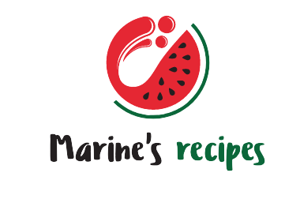

<script>
//pour que la navbar responsive se referme lorsqu'on sélectionne un ongle
$(document).on('click','.navbar-collapse.show',function(e) {
  $(this).collapse('hide');
});
</script>

<nav class="navbar navbar-expand-lg navbar-light bg-light"  role="navigation">
  <button class="navbar-toggler" 
  type="button"
  data-toggle="collapse"
  data-target="#navbarNavDropdown"
  aria-controls="navbarNavDropdown"
  aria-expanded="false"
  aria-label="Toogle navigation">
    <span class="navbar-toggler-icon"></span>

  </button>
  
  <div class="collapse navbar-collapse justify-content-md-center"
    id="navbarNavDropdown">
    <ul class="navbar-nav">
      <li class="nav-item">
        <a data-toggle="collapse" data-target=".navbar-collapse" class="nav-link" routerLink="/">Accueil </a>
      </li>

      <li class="nav-item">
        <a data-toggle="collapse" data-target=".navbar-collapse" class="nav-link" routerLink="/allRecipes">Recettes</a>
      </li>

      <li class="nav-item">
        <a data-toggle="collapse" data-target=".navbar-collapse" class="nav-link" routerLink="/aboutMe">A propos</a>
      </li>

      <li class="nav-item">
        <a data-toggle="collapse" data-target=".navbar-collapse" class="nav-link" routerLink="/contact">Contact</a>
      </li>

      <li class="nav-item" *ngIf="!auth.isLoggedIn()">
        <a data-toggle="collapse" data-target=".navbar-collapse" class="nav-link" routerLink="/login">Se connecter</a>
      </li>

      <li class="nav-item" *ngIf="!auth.isLoggedIn()">
        <a data-toggle="collapse" data-target=".navbar-collapse" class="nav-link" routerLink="/register">S'inscrire</a>
      </li>

      <li class="nav-item dropdown" *ngIf="auth.isLoggedIn()">
          <a data-toggle="collapse" data-target=".navbar-collapse" class="nav-link dropdown-toggle" id="navbarDropdownMenuLink" data-toggle="dropdown" aria-haspopup="true" aria-expanded="false">
            {{auth.getUserDetails()?.pseudo}} 
          </a>
          <div class="dropdown-menu" aria-labelledby="navbarDropdownMenuLink">
            <a class="dropdown-item" routerLink="/profile">Mon profil</a>
            <a class="dropdown-item" routerLink="/favorites">Mes recettes ♥</a>
            <a class="dropdown-item" routerLink="/shoppingList">Ma liste de course</a>
            <a class="dropdown-item" routerLink="/comment">Mes commentaires</a>
            <a class="dropdown-item" *ngIf="auth.isAdmin()" routerLink="/handleRecipes" >Gerer les recettes</a>
            <a class="dropdown-item" routerLink="" (click)="auth.logout()">Deconnexion</a>
          </div>
      </li>
    </ul>
  </div>
</nav>

<router-outlet></router-outlet>


<!--footer
<footer>
<link href="https://maxcdn.bootstrapcdn.com/font-awesome/4.7.0/css/font-awesome.min.css" rel="stylesheet" integrity="sha384-wvfXpqpZZVQGK6TAh5PVlGOfQNHSoD2xbE+QkPxCAFlNEevoEH3Sl0sibVcOQVnN" crossorigin="anonymous">


    
    <div class="instagram"><a href="https://www.instagram.com/marineteroitin/?hl=fr"><i class="fa fa-instagram fa-2x" aria-hidden="true"></i></a></div>
  </footer>
  -->